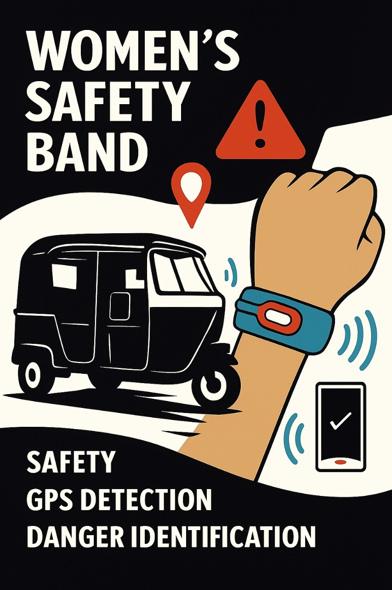

HerGuardian – SafeBand AI
Problem Statement
Women traveling in public transport, especially in autos and taxis, often face harassment, unsafe routes, or even physical threats. In such moments, they may not always be able to use a phone or trigger a manual SOS for help.
This issue is urgent because women’s safety in public spaces is a growing social concern. Over the past three years, crimes against women in India have increased from 371,503 cases in 2020 to 445,256 cases in 2022 — which means nearly one incident every 73 seconds. A recent survey also showed that 7% of women reported harassment in public spaces in just the past year.
Proposed Solution
SafeBand is a wearable smart band integrated with GPS and AI-powered anomaly detection. It continuously monitors the user’s travel patterns in real time.
If unusual behavior is detected — such as deviation from route, sudden stops, or panic movements — the band automatically sends alerts with live location to pre-set emergency contacts and authorities.
Key Features
- AI-powered anomaly detection for real-time safety monitoring.
- Automatic alerts to emergency contacts and authorities.
- GPS-enabled live tracking for quick response.
- Hands-free operation — no need to press an SOS button.
- Offline data storage with auto-sync when network is restored.
- Customizable emergency contact list via SafeBand app.
Emergency Helpline Numbers
| Service | Helpline Number |
|---|---|
| HerGuardian Helpline 1 | 9182920647 |
| HerGuardian Helpline 2 | 8185892753 |
| HerGuardian Helpline 3 | 8121763647 |
| HerGuardian Helpline 4 | 9490438787 |
| HerGuardian Helpline 5 | 9848150179 |